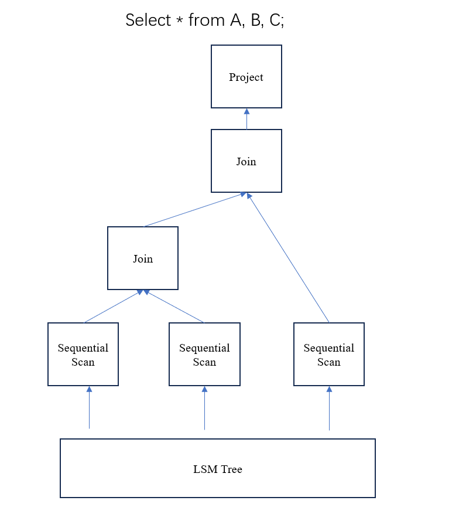
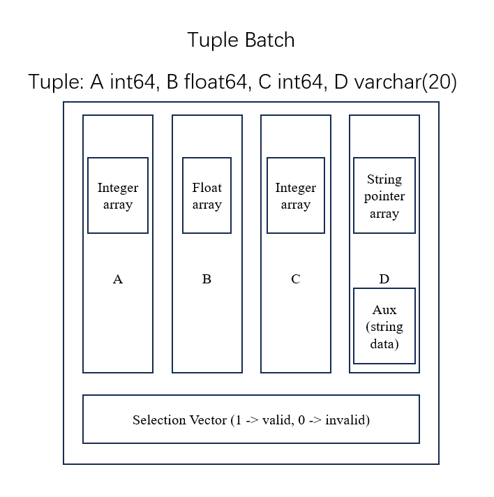

In Project 2, you will implement a pull-based vectorized execution engine.
Vectorized engine
Volcano-style engines are simple and easy to implement, but they have poor performance due to the large overhead in virtual function calls. While they worked well in the past because disk I/O was the primary bottleneck, they are inefficient on modern CPUs and disks. Most modern query engines either use vectorization or data-centric code generation (just-in-time compilation). Vectorized engines fetch a batch of tuples instead of just one at a time, which amortizes the virtual function call overhead and can leverage SIMD (Single Instruction, Multiple Data) techniques.
In execution/executor.hpp, you can find the interfaces in VecExecutor. The interfaces are:
Init(): Initializes the executor.
Next(): Returns a batch of tuples. If there are no tuples to return, it returns an empty result.
Operators (Executors) are organized as a tree. The system calls the Next() function of the root operator of the tree, then the root operator calls the Next() functions of its children, and so on. The leaf operators of the tree are SeqScanVecExecutor which read tuple data from the storage engine and allocate a buffer to store them in memory. The tuple data is processed and transferred from the leaf to the root, and return to the system. The system calls Next() until it returns empty result.

Data structure
The batch of tuples is stored in TupleBatch (refer totype/tuple_batch.hpp). TupleBatch has Vectors storing each column (refer to type/vector.hpp and type/vector_buffer.hpp) and a selection vector storing validation bits. The selection vector is used in cases of low selectivity (for example, when 95\% of tuples are valid, we do not need to eliminate invalid ones; instead we just mark them as invalid.). Each Vector has an array of elements. Each element is of type StaticFieldRef (refer to type/static_field.hpp). It is an 8-byte object that can store a 64-bit integer (LogicalType::INT, refer to type/field_type.hpp) or 64-bit float (LogicalType::FLOAT) or a string pointer (LogicalType::STRING). If the Vector stores strings, it stores an array of string pointers and a pointer to an auxlitary buffer (Vector::aux_) which stores actual string data.

The figure above shows the structure of TupleBatch. The types of tuple are: LogicalType::INT, LogicalType::FLOAT, LogicalType::INT, LogicalType::STRING. The Vector which stores column D has a pointer to an auxlitary buffer storing actual string data.
In TupleBatch, num_tuple_ stores the number of tuples including valid ones and invalid ones, num_valid_tuple_ stores the number of valid tuples, capacity_ stores the maximum number of tuples. Like capacity and size in std::vector, capacity_ can be larger than num_tuple_ and tuples with indices between num_tuple_ and capacity_ - 1 are empty (neither valid nor invalid).
To create a TupleBatch, you need to call TupleBatch::Init. You need to get the tuple type and pass it as std::vector<LogicalType>. If you have an OutputSchema, you can call OutputSchema::GetTypes() to get it. You also need to pass a initial size to the function, you can use max_batch_size_ (the maximum batch size) in VecExecutor, so that it will not need to resize during execution. Here is an example:
OutputSchema table0_;
TupleBatch batch;
batch.Init(table0_.GetTypes(), max_batch_size_);
After the TupleBatch is created, it is empty, you can use TupleBatch::Append to append tuples. Note that this function deepcopies tuple data, i.e. it copies the string data and creates a new string pointer. So you do not need to worry about the string pointers being invalid. Here is an example:
TupleBatch result_;
std::vector<StaticFieldRef> tuple;
...
// Append the tuple in std::vector<StaticFieldRef>
result_.Append(tuple);
std::vector<Vector> v;
...
// Append all tuples in std::vector<Vector>
for (int i = 0; i < tuple_cnt; i++) {
result_.Append(v, i);
}
To access the j-th column of the i-th tuple, you can use TupleBatch::Get(i, j). It returns a StaticFieldRef object, you can use ReadInt, ReadFloat or ReadStringView based on its type (type is not stored in StaticFieldRef, it is stored in other places such as OutputSchema). To assign a value to the j-th column of the i-th tuple, you can use TupleBatch::Set(i, j, value). To get a reference to the i-th tuple, you can use TupleBatch::GetSingleTuple(i), it returns a TupleBatch::SingleTuple, a read-only reference. You can use operator[] to access the j-th column in TupleBatch::SingleTuple, for example GetSingleTuple(i)[j] accesses the j-th column of the i-th tuple.
To iterate over the valid tuples in TupleBatch, you can use: (1) iterate over all the tuples and use TupleBatch::IsValid to check if they are valid, or (2) use TupleBatch::iterator and for(auto :), it only returns valid tuples. It returns TupleBatch::SingleTuple, a read-only reference. Here is an example:
// 1.
TupleBatch batch;
for (uint64_t i = 0; i < batch.size(); i++) {
if (batch.IsValid(i)) {
// batch.Get(i, j) access the j-th column of i-th tuple.
}
}
// 2.
TupleBatch batch;
for (auto t : batch) {
// use t[i] to access the i-th column of the tuple
// use batch2.Append(t) to append the tuple to another tuple batch.
}
Vector has two types: constant and flat. If its type is flat, then it stores a normal array. If its type is constant, then it is a vector in which all the elements are the same. Physically it only stores one element. It is used for constants in the expressions, or nested loop join executors. To create a vector, you need to pass the vector type (VectorType::Flat or VectorType::Constant), the element type (LogicalType::FLOAT, LogicalType::STRING and LogicalType::INT), and the number of elements of the vector. There is no validation information in Vector. It assumes that all the elements in Vector are valid and need to be calculated in expression evaluation.
OutputSchema
Since SQL is a statically-typed language, the types of the output of operators are known. They are stored in OutputSchema (refer to plan/output_schema.hpp) in PlanNode::output_schema_ (refer to plan/plan.hpp). You can use OutputSchema::GetTypes to get types in std::vector<LogicalType>. To get more information, you can use OutputSchema::operator[] or OutputSchema::GetCols to get the OutputColumnData structure, which stores table name, column name, type, etc. You may also need to concatenate two OutputSchemas (e.g in the join executor), you can use OutputSchema::Concat(left, right).
ExprVecExecutor
In vectorized execuction engine, expressions are evaluated in batches, greatly reducing the interpretation overhead. For each expression, we construct an executor called ExprVecExecutor (refer to execution/vec/expr_vexecutor.hpp). ExprVecExecutors are organized as a tree, where the leaf nodes of the tree are input, the root node stores the result into the result Vector. The expression is evaluated from the bottom to the top, and inner nodes (nodes that are not leafs) may need to allocate a buffer to store temporary results. Here is an example shown in the figure below.

You can find ExprVecExecutor in execution/vec/expr_vexecutor.hpp. To create an ExprVecExecutor, you need to pass a pointer to Expr, which stores expression information, and a OutputSchema, which stores type information. To evaluate the expression, you need to pass a std::span<Vector> (std::span is similar to std::string_view, but it is used for std::vector or std::array objects) with the same types in the OutputSchema you passed during creation, and the number of tuples (including valid tuples and invalid tuples, i.e. the return value of TupleBatch::size) in the input, and a reference to the result Vector. Here is an example (refer to execution/vec/project_vexecutor.hpp):
OutputSchema input_schema; // The OutputSchema of the child executor, it has the type of input tuples.
std::unique_ptr<Expr> expr; // The expression information
expr_ = ExprVecExecutor::Create(expr.get(), input_schema);
//...
TupleBatch input;
Vector result;
// input.GetCols() returns all the columns in input.
expr_.Evaluate(input.GetCols(), input.size(), result);
Use shell
If you want to execute your own SQLs, you can call ./wing <DB file name> under build directory. The syntax is similar to PostgreSQL.
Create a table: Different from standard SQL, the columns only have 4 types: int64, float64, int32 and varchar.
create table A(a int64, b float64, c varchar(20), d int32);
create table A2(a int64 primary key, b float64); -- a is the primary key of A2
create table A3(a int64 auto_increment primary key , b float64); -- a is the primary key and it is an auto_increment value (you can always pass 0 to it while inserting and it is automatically set to 1, 2, 3, 4....)
create table A4(a int64 foreign key references A(a), b float64); -- a is a foreign key referencing A(a).
create table A5(a int64 primary key foreign key references A(a), b float64); -- a is a foreign key referencing A(a) and it is the primary key of A5.
Drop a table:
drop table A;
Insert into a table:
insert into A values (2, 3, 'dsf', 4), (6, 7, 'asd', 8);
Delete from a table:
delete from A where a = 2;
Scan a table:
select a, b * 2 from A;
Join two tables:
select * from A, B;
Join two tables on some predicates:
select * from A join B on A.a = B.a;
select * from A, B where A.a = B.a;
To show the plan, you can use explain command:
explain select * from A, B;
Here is a possible result:
Project [Output: a%0=A.a%0%int, a%2=B.a%2%int]
-> Join [Predicate: ]
-> Seq Scan [Table: A] [Predicate: ]
-> Seq Scan [Table: B] [Predicate: ]
If you want to exit:
exit